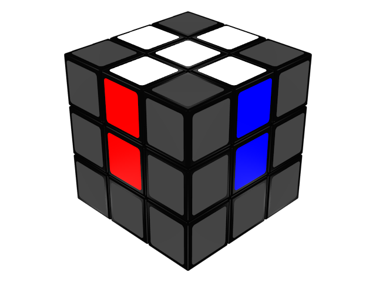
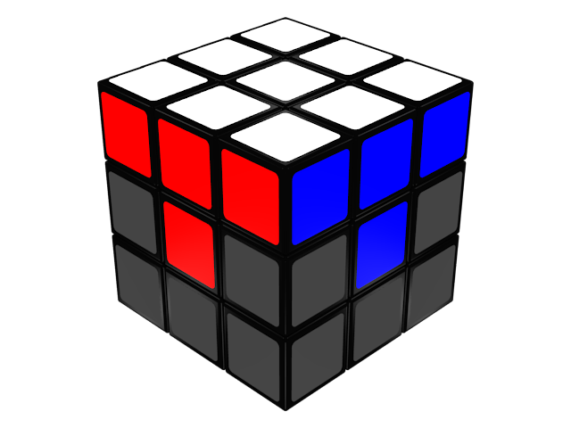

En este caso os voy a enseñar como hacer el cubo desde la cara blanca. Para hacer la cruz blanca, lo primero que hay que ver es que las aristas del cubo como podeis ver tiene dos colores, entonces teneis que cuadrar en este caso la parte de la arista que tiene el color blanco con el centro de color blanco. Tenes que fijaros que otros colores tienen las aristas, esos colores son: (rojo,naranja,azul,verde). Teneis que cuadrarlo como en la imagen que hay a continuación.
"Siguiendo en la cara blanca". Tenemos que colocar las esquinas, como en el paso anterior cuadrando los colores, en este caso las esquinas tienen 3 colores, entonces hay que cuadrar los tres colores de las esquinas. En las que os teneis que fija son en:
1º (esquina de color blanco,verde y rojo)
2º (esquina blanca, roja y azul).
3º (esquina de color blanco, azul y naranja).
4º (esquina de color blanco, naranja y verde).
Os tiene que quedar como en la imagen siguiente.
Los dos pasos que hemos hecho anteriormente servian para completar la primera capa del cubo, en las segunda capa solo necesitaremos un paso, pero sera un poco mas complicada, por que aquí ya empezaremos con patrones.
En este paso lo prinmero que tenemos que hacer sera buscar las aristas que no contengan amarillo, a continuación os dejare un video par que veais los movimentos que teneis que Realizar
En este paso mediante un codigo pondremos la cruz amarilla, cuando realizemo el codigo nos daremos cuenta que la cruz amarilla estara hecha pero no estaran o al menos no todas las aristas cuadradas con los otros centros,puede suceder el caso en el que si estencuadras con los otros centros, pero no es lo abitual.
Aqui abajo estar como hacerlo paso a paso, y todas las opciones que os puedan salir, el video esta pare que lo veais hasta que os salga a la primera.
El paso anterior y este estan conectados, aparte de formar parte de la ultima capa, en este paso tendremos que colocar bien las aristas amarillas en su sitio, porque ahora simplemente estan orientadas hacia arriba.
Para que os sea mas facil teneis un video abajo que lo podreis repetir las veces que os haga falta.
Ya casi vamos llegando al final, en este penultimo paso lo que vamos a hacer es colocar pero no orientar nuestras esquinas de nuestra cara amarilla.
Para ello os dejo un video como los anteriores, para que lo resolvais, practiqueis.
Hemos llegado al ultimo paso, tendremos que orientar nuestras esquinas anteriormente colocadas, este proceso que os voy a enseñar a continuación con un video lo podeis hacer de diferentes formas, pero en el video aparce en mi opinion la forma mas facil.